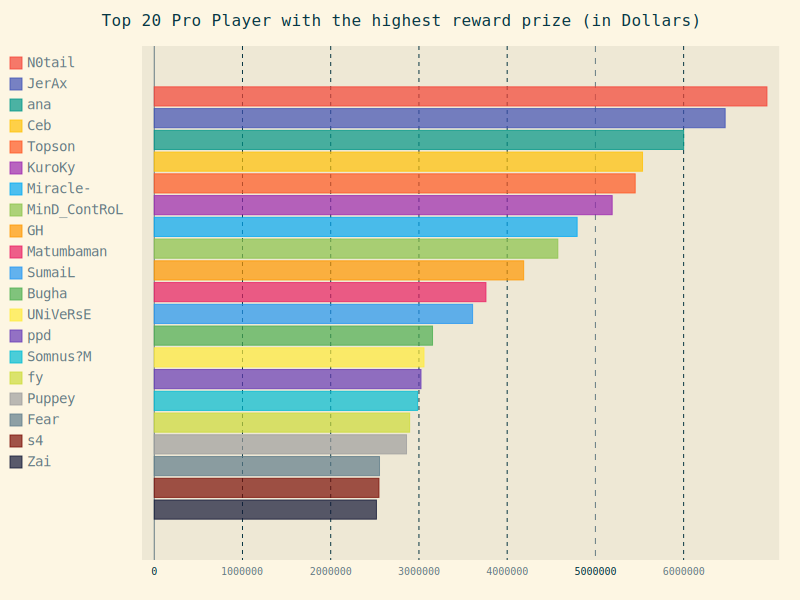

Data Analysis: e-sport by KAIF
Data Analysis
Welcome to our website

#Web นี้จะมีเนื้อหาที่เกี่ยวข้องกับการจัดอันดับในด้านต่างๆ เช่น รายได้ของเกม, ความนิยม, มูลค่าเงินรางวัล ฯลฯ ซึ่งจะเน้นด้านข้อมูลที่เกี่ยวข้องกับ e-sport ซึ่งกำลังได้รับความนิยมอย่างแพร่หลายในปัจจุบัน e-sport นั้นนอกจากจะเป็นกีฬา ที่ให้ความบันเทิงแล้วนั้นยังช่วยสร้างรายได้ให้กับนักกีฬา นักพากย์ หรือ ทุกอาชีพที่มีความเกี่ยวข้องกับเกมที่ถูกจัดอยู่ในหมวดเกม ที่สามารถใช้เป็นกีฬาทางอิเล็กทรอนิกส์หรือที่เรามักเรียกกันว่า e-sportนั้นเอง
 |
 |
 |
TopFranchises |
TopHighestEarnings |
TopTeamE-sportEarnings |
 |
 |
|
TopGameAwardPrize |
TopVideoGameConsolesSell |
TopCompanies |